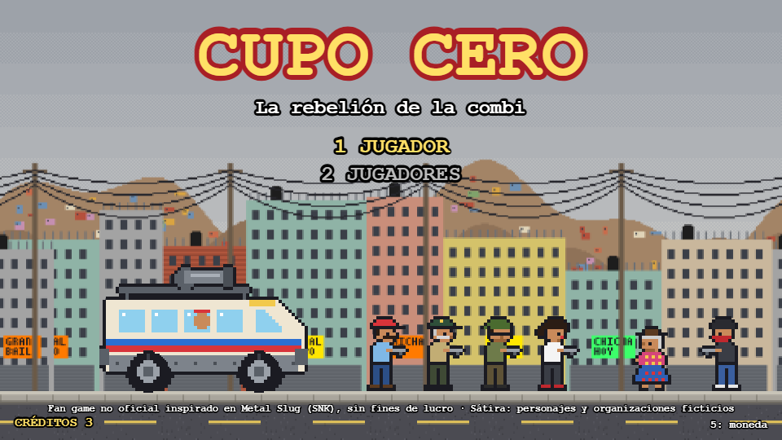
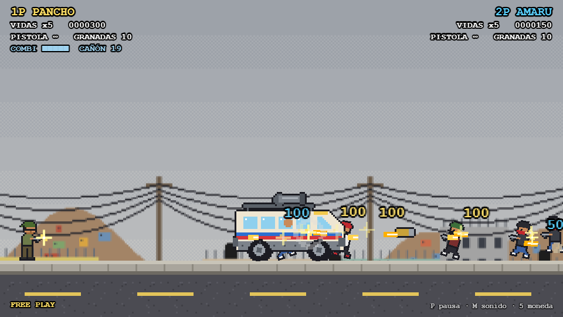
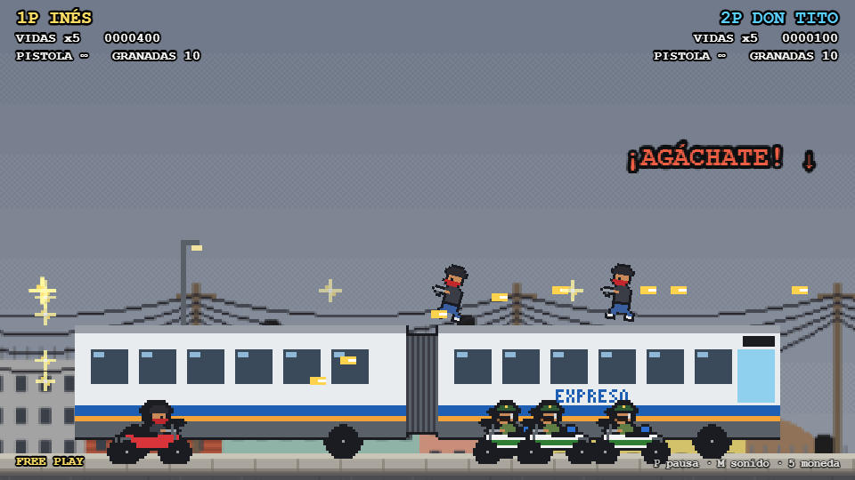
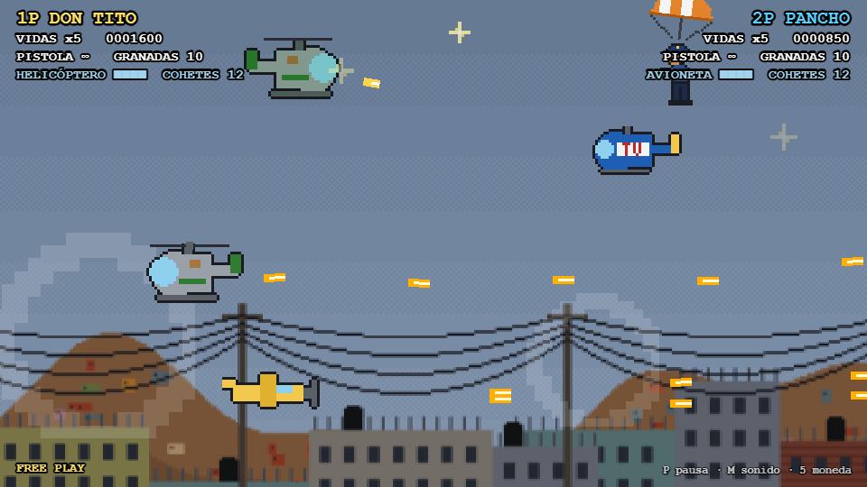
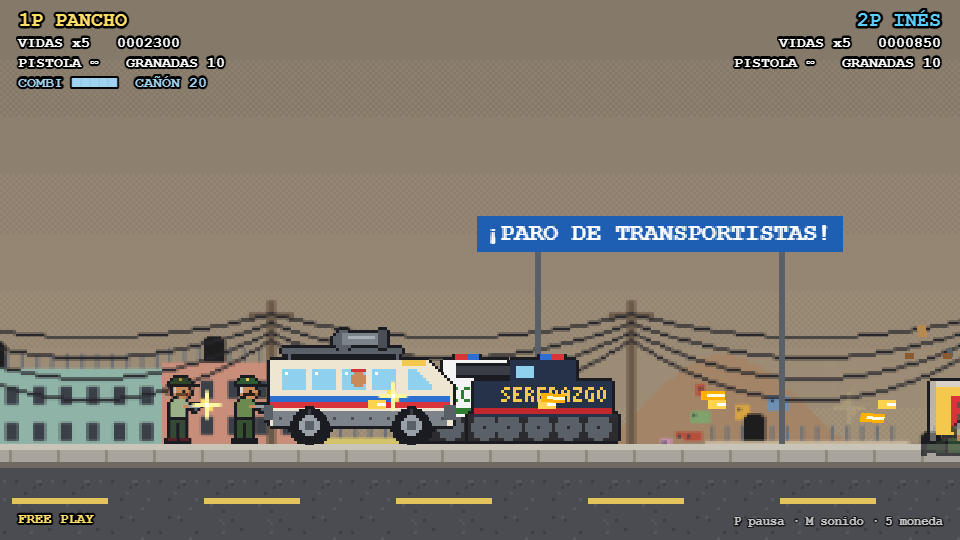
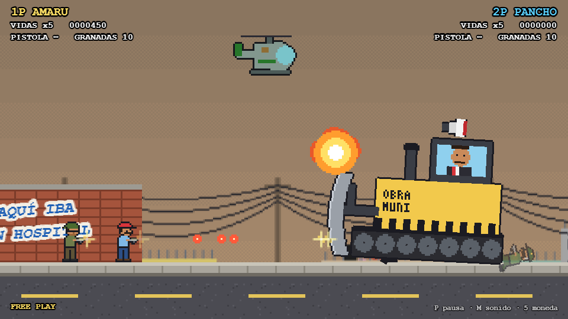

Fan game no oficial · hecho con Claude Code
CUPO CERO
Un chofer de combi contra los cuperos, la policía corrupta y el alcalde de Pima.
▶ JUGARGratis en el navegador · PC (teclado o mando) o celular (controles táctiles) · 1 o 2 jugadores
De qué trata
Cupo Cero es un run-and-gun al estilo Metal Slug. Pancho, chofer de combi, se cansa de pagar el "cupo" después de que matan a su compadre por no pagar. Junto a Amaru (un mercenario contratado por el gremio de transportistas), Don Tito (un policía retirado, de los honestos) e Inés (dueña de una botica extorsionada), recorre 5 misiones: primero las bandas, luego la policía corrupta que las protege y al final el alcalde detrás de todo.
Es una sátira con humor de arcade: muertes exageradas, jefes ridículos y globos de diálogo. Los chistes apuntan a los extorsionadores, a los malos policías y a los políticos, nunca a las víctimas.
Por qué lo hicimos
Nos inspiramos en la terrible situación que vive actualmente el transporte en Lima: choferes de combi y de bus extorsionados, amenazados y asesinados por no pagar. "Pima" es nuestra parodia de la ciudad, pero el problema es real.
Queremos visibilizarlo. Para ti esto es un juego; para mucha gente, no lo es.
Capturas






Qué tiene
- 5 misiones y 7 jefes: una máquina contadora de billetes, un archivador gigante, el alcalde en excavadora…
- Vehículos: la Combi Slug, un mototaxi, el rochabus, el techo del Lentopolitano y un nivel aéreo.
- Armas como la anticuchera, un gallo de pelea y una pelota de fulbito.
- Comida peruana que te pone gordito o mareado.
- Rescata policías honestos: te dan pistas para el expediente y vuelven a pelear contigo al final.
- Cooperativo para 2 jugadores en el mismo teclado o con mandos.
Controles
Teclado
- ← →
- Moverse
- ↑ / ↓
- Apuntar arriba / agacharse (subir a la combi)
- Z
- Saltar
- X
- Disparar
- C
- Granada
- Enter / 5
- Empezar / insertar moneda
- P / M
- Pausa / sonido
Celular
- Joystick
- Desliza en la mitad izquierda para moverte y apuntar
- SALTO
- Saltar
- DISPARO
- Disparar
- GRANADA
- Granada
- MONEDA
- Créditos
Juega con el celular en horizontal.
2 jugadores
- 1P
- WASD + F G H
- 2P
- Flechas + , . /
- Mando
- A saltar · X disparar · B granada · Start
In English
Cupo Cero is a Metal Slug-style run-and-gun fan game made with Claude Code, inspired by the real extortion crisis hitting bus drivers in Lima, Peru. A combi driver and three allies fight the gangs, the corrupt police who protect them and finally the mayor of "Pima", our parody of the city. Goofy arcade action on a serious subject; the satire punches up, never at the victims. All art and sound are generated in code. Free to play in the browser, on PC or phone, for 1 or 2 players.